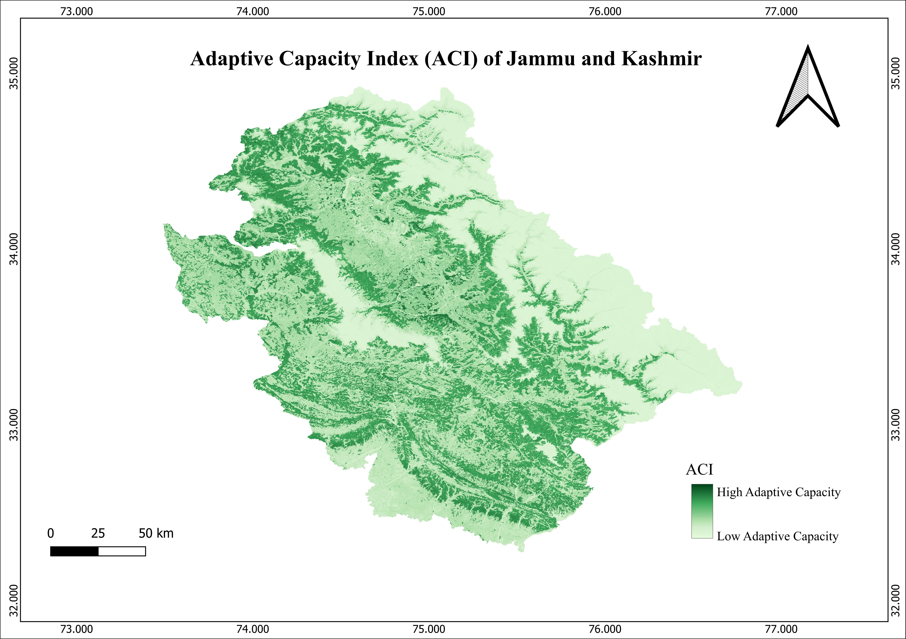
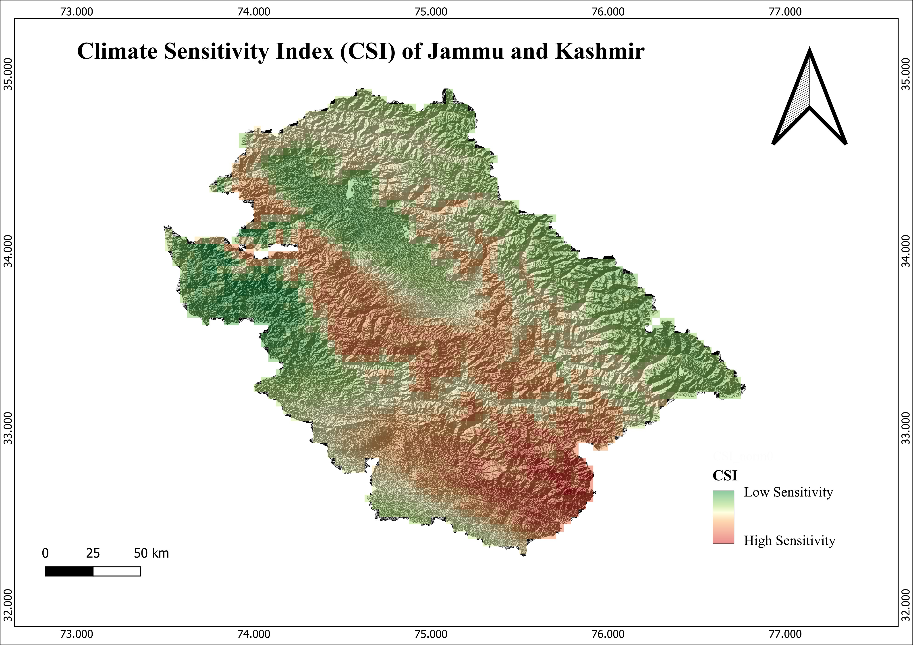
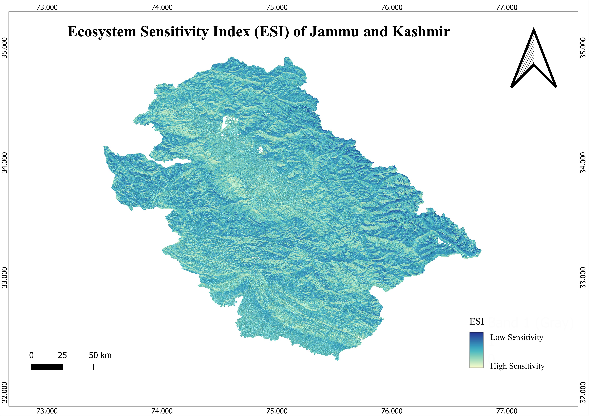
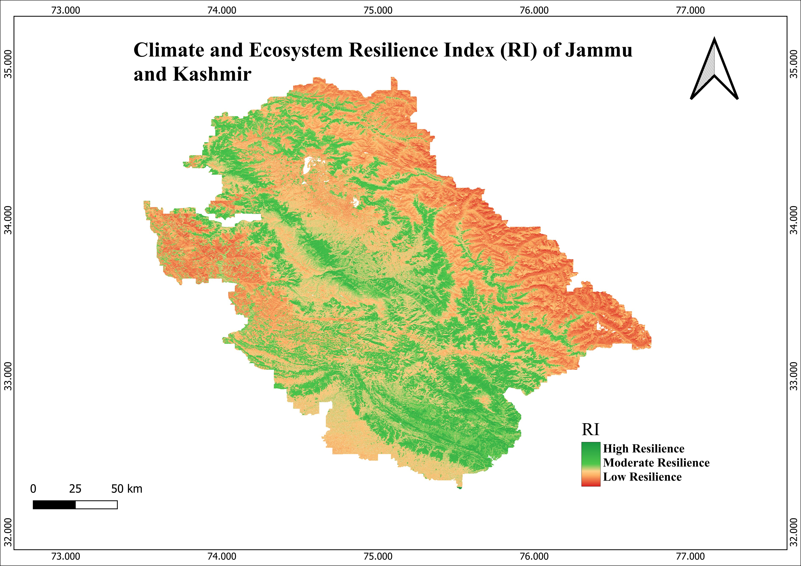

32.9156° N, 75.1417° E
I am an early-career researcher in geospatial and environmental science, specializing in GIS, remote sensing, and spatial analysis. My work focuses on climate variability, land-use change, and environmental risk assessment in the Himalayan region.
Climate and Ecosystem Resilience of Jammu and Kashmir
GIS-Based Spatial Modeling using QGIS
View Project
ACI

CSI

ESI

RI
Published:
Rainfall Variability, Soil Susceptibility and Landslide Vulnerability
Under Review:
Landslide Susceptibility Analysis – Western Himalayas
Environmental Determinants of Health
M.A./M.Sc Geography — University of Jammu (2022–2024)
B.A Geography — University of Jammu (2019–2022)